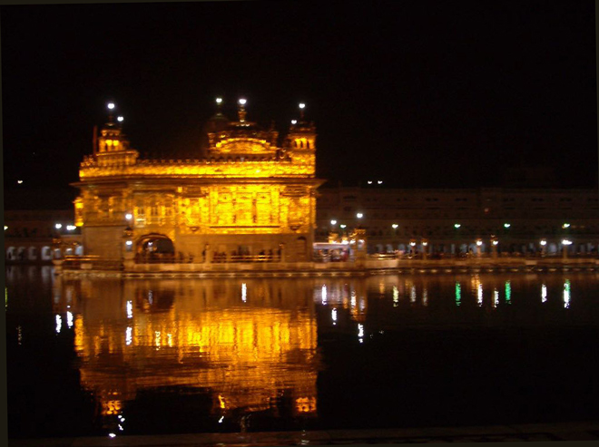
.
The triple-storeyed Harmandir, the 'Golden Temple of God' from which the complex takes its name, was built by Arjan Dev to house the Adi Granth, or 'Original Book', which he compiled from the teachings of all the Sikh gurus, and which still forms the lynchpin of the Sikh faith.
Instead of the usual single door, the temple has four to indicate that it is open to people of all faiths and to all four caste divisions of Hindu society.
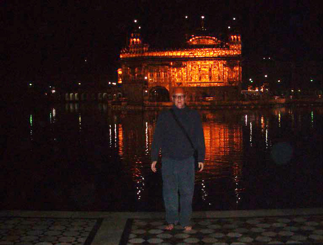
The long causeway, or Guru's Bridge, which joins the mandir to the west side of the Amrit Sarovar, is approached via an ornate archway, the Darshani Deorhi, where worshippers collect dollops of sticky sweet porridge on a leaf, prasad that will later be placed as an offering in the shrine itself.
The interior of the temple, dripping in yet more gold and silver, and adorned with ivory mosaics and intricately-carved wood panels, is dominated by the enormous Adi Granth, which rests on a sumptuous throne beneath a jewel-encrusted silk canopy.
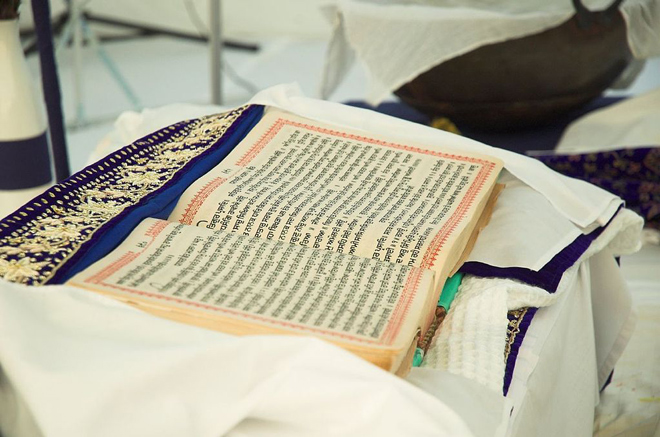
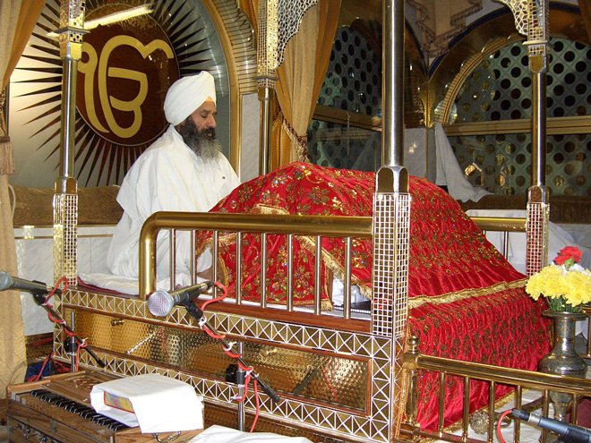
Before his death in 1708, Guru Gobind Singh, who revised the Adi Granth, declared that he was to be the last living Guru and the Holy Book would take over as Guru after him. Accordingly the Book is given 'human' status and is recited from in continuous readings which are carried out in three-hour shifts and take a total of 48 hours to complete.
At the end of the day, the Adi Granth is paraded around the Harmandir and then put to bed, literally wrapped up in blankets for the night. When we were there, the blankets were made from artificial fibres and featured images of Winnie the Pooh ...
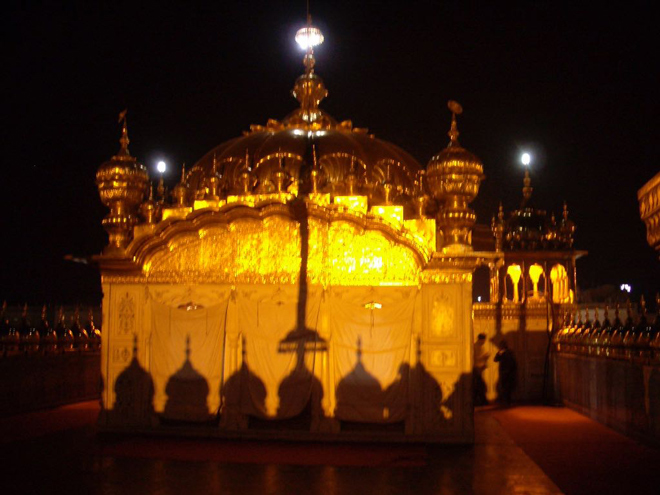
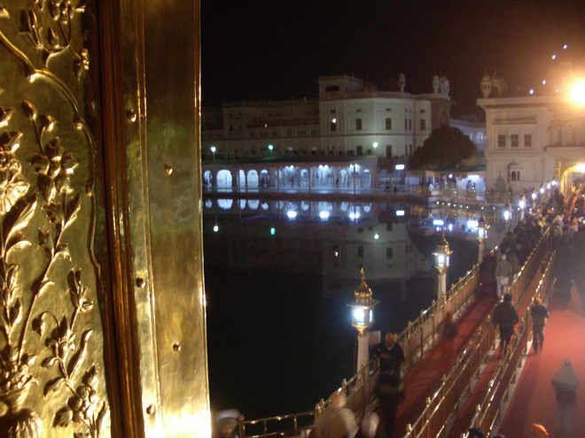
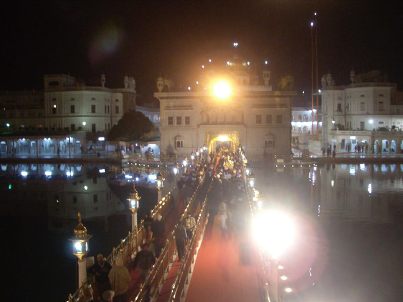
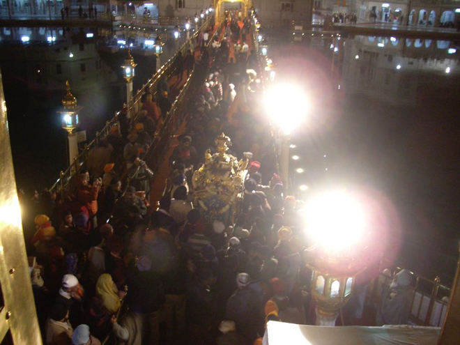
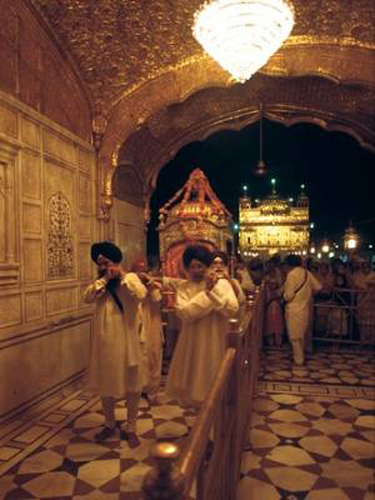
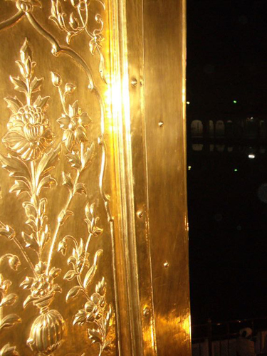
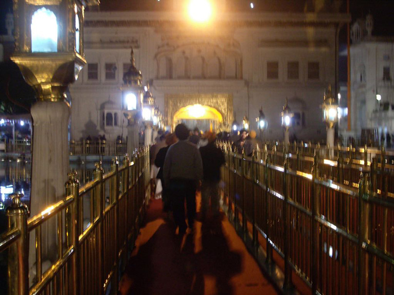
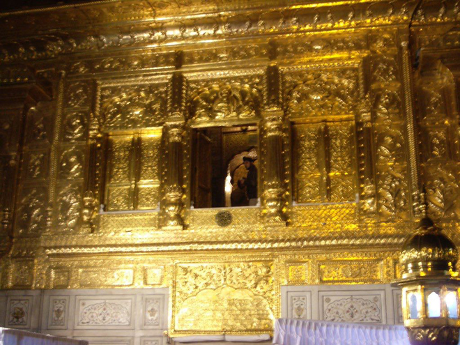
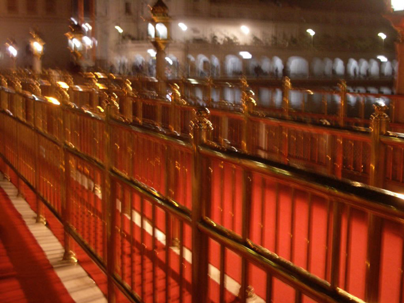
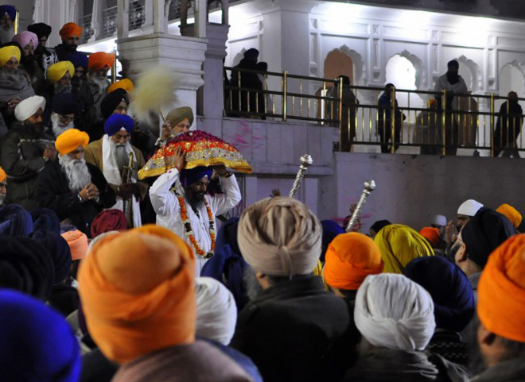
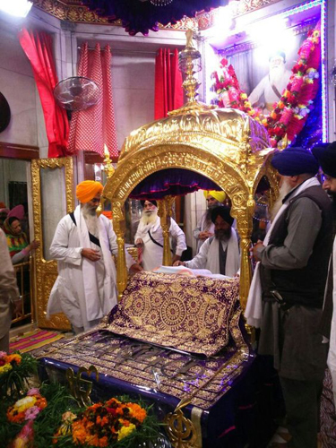
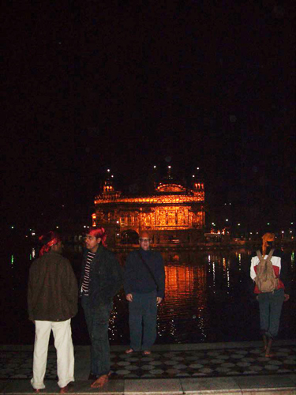
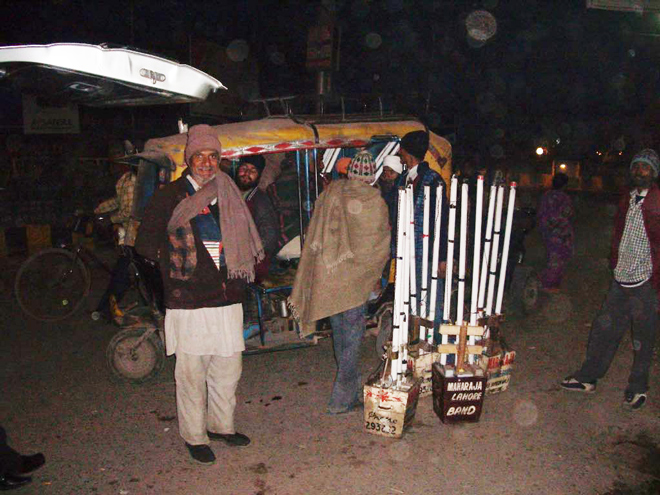